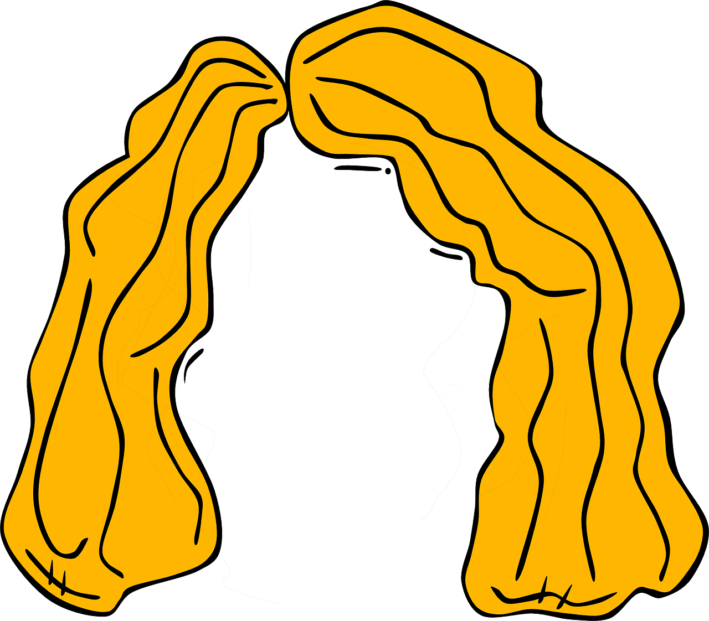

Description
Sif's hair is a wig crafted by the sons of Ivaldi.
It was commissioned by Loki to replace Sif's real hair after he cut it off.
Once placed upon the head the wig will become the wearers actual hair.
Ingredients
- 1 Gold bar
- The powerful magic of the dwarfs
Steps
- Heat the gold bar in a furnace until it is molten
- Remove the molten gold from the furnace and spin it into long threads with a spinning wheel
- Return the threads to the furnace to combine them into a wig
- Remove the wig from the furnace and allow to cool
Top of page
Homepage